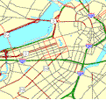
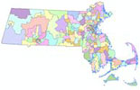
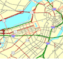
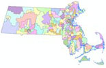
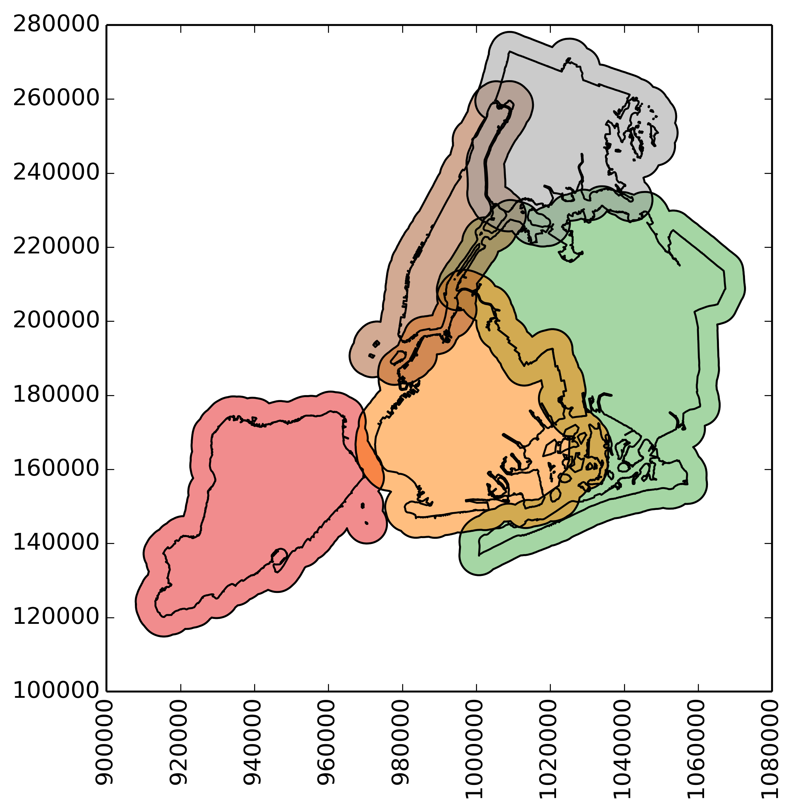
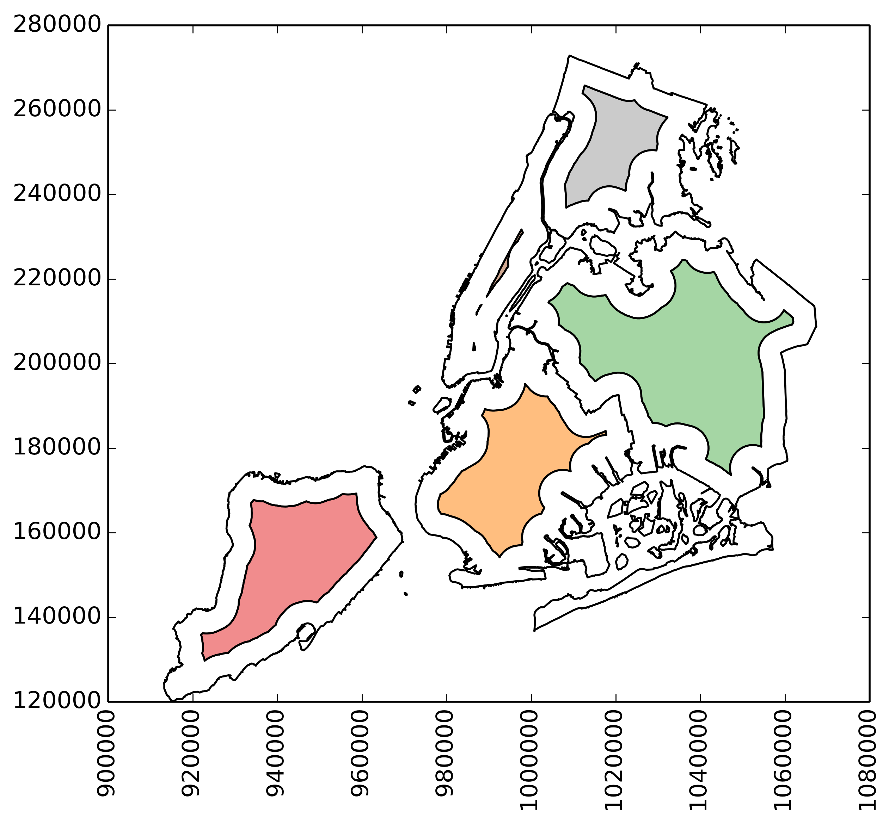
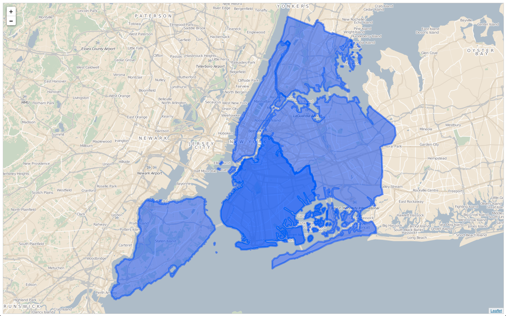
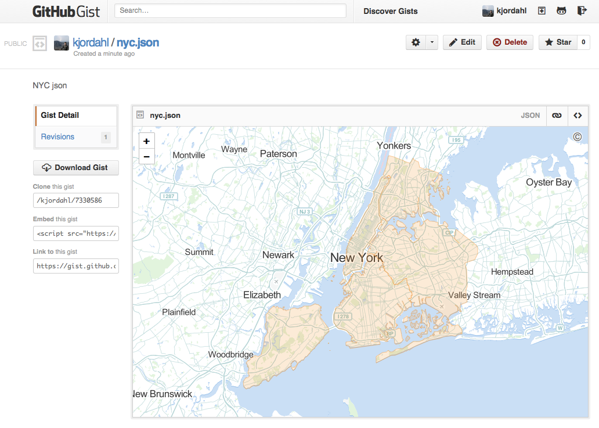

Data, examples and exercises
https://github.com/kjordahl/SciPy-Tutorial-2015
Slides
Data, examples and exercises
https://github.com/kjordahl/SciPy-Tutorial-2015
Slides
The emphasis of this tutorial will be on:
Some big topics we will not be covering (much):
Vector data includes points, lines, polygons
 



Raster data includes images, digital elevation models, 2-D fields
{
"type": "Feature",
"geometry": {
"type": "Point",
"coordinates": [125.6, 10.1]
},
"properties": {
"name": "Dinagat Islands"
}
}
Represents simple features in a JSON format.
A GeoJSON object can represent any of the following:
geometry (Point, LineString, Polygon, MultiPoint,
MultiLineString, MultiPolygon, or GeometryCollection)geometry and properties)GDAL (Geospatial Data Abstraction Library) is the open source Swiss Army knife of raster formats. It also includes the OGR simple features library for vector formats.
GDAL's python bindings expose most of the functionality of GDAL.
>>> from osgeo import gdal >>> from osgeo import ogr
GDAL python bindings are not very "pythonic"
geo = gdal.Open(raster_file)
drv = geo.GetDriver()
print(drv.GetMetadataItem('DMD_LONGNAME'))
Most of the GDAL bindings are thin wrappers of their C++ counterparts.
See examples/gdal_example.py
OGR → Fiona
GDAL → Rasterio
Fiona is a minimalist python package for reading (and writing) vector data in python. Fiona provides python objects (e.g. a dictionary for each record) to geospatial data in various formats.
>>> import fiona
>>> c = fiona.open('data/test_uk.shp')
>>> rec = c.next()
>>> rec.keys()
{'AREA': 244820.0,
'CAT': 232.0,
'CNTRY_NAME': u'United Kingdom',
'FIPS_CNTRY': u'UK',
'POP_CNTRY': 60270708.0}
>>> rec['geometry']
{'coordinates': [[(0.899167, 51.357216),
(0.885278, 51.35833),
(0.7875, 51.369438),
(0.781111, 51.370552),
(0.904722, 51.358055),
(0.899167, 51.357216)]],
'type': 'Polygon'}
Usage: fio [OPTIONS] COMMAND [ARGS]... Commands: cat Concatenate and print the features of datasets collect Collect a sequence of features. dump Dump a dataset to GeoJSON. info Print information about a dataset. insp Open a dataset and start an interpreter. load Load GeoJSON to a dataset in another format.
exercises/Fiona exercise.ipynb
Shapely is a python library for geometric operations using the GEOS library.
Shapely can perform:
>>> line = LineString([(0, 0), (1, 1), (0, 2), (2, 2), (3, 1), (1, 0)]) >>> dilated = line.buffer(0.5) >>> eroded = dilated.buffer(-0.3)
object.almost_equals(other[, decimal=6])
object.contains(other)
object.crosses(other)
object.disjoint(other)
object.equals(other)
object.intersects(other)
object.touches(other)
object.within(other)
Zip is your friend! Use it with tuple unpacking to change between sequences of (x, y) pairs and seperate x and y sequences.
>>> pts = [(0, 0), (1, 0), (1, 1), (2, 1), (2, 2)] >>> x, y = zip(*pts) >>> print(x, y) (0, 1, 1, 2, 2) (0, 0, 1, 1, 2)
Also, instead of calling f(x, y), you can just use
>>> f(*zip(*pts))
And when size matters,
>>> from itertools import izip
exercises/Shapely exercise.ipynb
"When people thought the earth was flat, they were wrong. When people thought the earth was spherical, they were wrong. But if you think that thinking the earth is spherical is just as wrong as thinking the earth is flat, then your view is wronger than both of them put together." -- Isaac Asimov
Examples:
Create an SRS with pyproj:
>>> from pyproj import Proj >>> p = Proj(init='epsg:3857') >>> p.srs '+units=m +init=epsg:3857 ' >>> p(-97.75, 30.25) (-10881480.225042492, 3535725.659799159) >>> p(-10881480.225042492, 3535725.659799159, inverse=True) (-97.75, 30.25)
examples/pyproj example.ipynb
with rasterio.open('manhattan.tif') as f:
img = f.read(1)
imshow(img, cmap='gray')
$ rio insp --ipython manhattan.tif
Rasterio 0.24.1 Interactive Inspector (Python 2.7.9)
Type "src.meta", "src.read_band(1)", or "help(src)" for more information.
In [1]: src.crs
Out[1]: {'init': u'epsg:26918'},
In [2]: src.height, src.width
Out[2]: (5205, 5757)
In [3]: grd = src.read(1)
In [4]: grd.shape
Out[4]: (5205, 5757)
examples/warp radar.ipynb
see also rasterio docs
examples/rasterio_mask.py
from rasterio.features import rasterize mask = rasterize([poly], transform=src.transform, out_shape=src.shape)

examples/rasterio_mask.py
utm18n = ccrs.UTM(18)
ax = plt.axes(projection=utm18n)
ax.imshow(src.read(1), origin='upper',
extent=(left, right, bottom, top), cmap='gray')
ax.coastlines(resolution='10m', linewidth=4, color='red')
gl = ax.gridlines(linewidth=2, color='lightblue', alpha=0.5, linestyle='--')

examples/rasterio_cartopy.py (see
also Cartopy docs)
exercises/landsat exercise.ipynb
GeoPandas is pure python (2.6, 2.7, 3.3+)
GeoPandas depends on:
Pandas
GeoPandas
>>> boros = GeoDataFrame.from_file('nybb.shp')
>>> boros.set_index('BoroCode', inplace=True)
>>> boros.sort()
BoroName Shape_Area Shape_Leng \
BoroCode
1 Manhattan 6.364422e+08 358532.956418
2 Bronx 1.186804e+09 464517.890553
3 Brooklyn 1.959432e+09 726568.946340
4 Queens 3.049947e+09 861038.479299
5 Staten Island 1.623853e+09 330385.036974
geometry
BoroCode
1 (POLYGON ((981219.0557861328125000 188655.3157...
2 (POLYGON ((1012821.8057861328125000 229228.264...
3 (POLYGON ((1021176.4790039062500000 151374.796...
4 (POLYGON ((1029606.0765991210937500 156073.814...
5 (POLYGON ((970217.0223999023437500 145643.3322...

 
 
boros.to_json()
>>> g = geocode(['1900 University Ave, Austin, TX',
'515 Congress Ave, Austin, TX',
'Texas State Capitol, Austin'])
>>> print(g)
address \
0 1900 University Avenue, The University of Texa...
1 515 Congress Avenue, Austin, TX 78701, USA
2 Texas Capitol, 1100 Congress Avenue, Austin, T...
geometry
0 POINT (-97.74034189999999 30.2824039)
1 POINT (-97.74252039999999 30.26759109999999)
2 POINT (-97.74035049999999 30.2746652)
examples/GeoDataFrame example.ipynb
see also:
exercises/Idaho lakes.ipynb
joined = sjoin(points, boros, how='inner')
examples/sjoin.py
contact info: